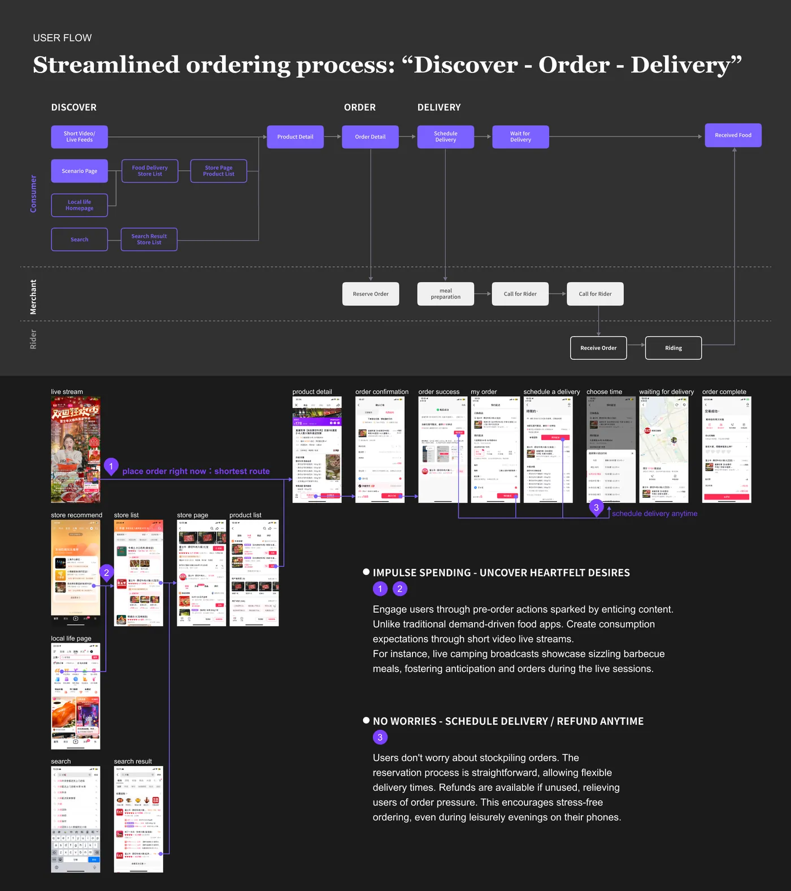

01 · Alibaba · Taobao Customer Service Platform · 2020–2022
A merchant chatbot that solves the problem, not just answers it
Taobao merchants send 200,000 support questions a day: orders, fulfilment, promotions, platform rules. I was the sole designer of the merchant chatbot and Help Center, and owned the ticket, escalation and permission modules of the agent workspace. Engineers built it. This was before LLMs: decision trees and good content.

Results
- 200Kinquiries a day
- 80%+solved without a human
- 52% → 81%Help Center resolution
- 20+localised sites reuse the framework
How the resolution rate went up
01
Solution-first answers
Problem. The bot replied with an article; the merchant still had to find the fix.
Change. Every branch of the tree ends in an action: a button, form or shortcut that does the fix.
02
Task-based tree
Problem. Questions were sorted by internal department, not by what the merchant was trying to do.
Change. A tree built on merchant tasks: listing → order → fulfilment → after-sales. Guided questions narrow the case in a few taps.
03
Fix the content behind it
Problem. The bot is only as good as its content: 3,000+ articles, 5 levels deep, duplicated topics.
Change. Card sorting with 16 merchants → 4 domains, 3 levels, semantic tags. Intents link straight to articles. Resolution 52% → 81%, search-to-answer −35%.
04
Hand-off with context
Problem. When the bot failed, merchants repeated everything to a human.
Change. The conversation and diagnosis go to the agent, who gets AI reply suggestions in one panel. Failure is cheap, so the bot can stay strict.
Measured per node: categorisation accuracy, comprehension time and label clarity. Weak nodes were renamed and re-tested.
How the conversation was designed
- Progressive disclosure: one decision per turn; the merchant never sees the whole tree.
- Guided questions first, free text as the fallback.
- Quick actions inside the chat: reply buttons and shortcuts into seller tools.
- One taxonomy, three surfaces: chatbot, Help Center and agent workspace share it, so a case keeps its shape as it moves.


What still holds for AI products
- Design the outcome, not the reply: a conversation should end in a finished task.
- Content and structure are still the product. An LLM is only as good as what it retrieves.
- Hand-off is a feature: know when to stop, and pass the context on.
- Measure per intent and fix the weak nodes.
If I built it today with an LLM: the tree becomes the guard-rails, not the interface; quick actions become tool calls with a confirmation step; the Help Center becomes the retrieval source, so the information architecture matters more, not less.
02 · ByteDance · TikTok Local Life · 2022–2023
Order First, Then Delivery: building the business side of a new delivery model
Meituan waits for hunger. Douyin (TikTok China) creates the craving: people see a dish in a video, buy it as a voucher and schedule delivery later. A consumer team made people want the food; my team built what happens next. My own part: the dispatch console for our new delivery stations, and the merchant tools for turning on delivery and handling reserved orders. It started on site, at the stations.

Results
- +300%order volume for the new model, business-wide
- −20%average delivery time, from the dispatch console
- 1 weekon site at delivery stations
- 1 monthto launch the dispatch MVP
The business · 1
Search vs. content
Douyin’s home ground was in-store group buying: a short video makes a dish look great, people buy the same set menu as a voucher and redeem it at the restaurant. Food delivery started during COVID on top of that business and copied the habit: order first, then delivery.
Search-drivenMeituan, Ele.me, Uber Eats
- Demand starts
- You are hungry and search
- A shop gets found by
- Climbing rankings, collecting reviews
- People buy
- Single dishes, delivered now
- Orders arrive
- At mealtimes, fairly steady
Content-drivenDouyin (TikTok China)
- Demand starts
- You see a dish in a video and want it
- A shop gets found by
- Its videos and live streams; a dish can sell out overnight
- People buy
- Set menus as vouchers, stocked up, delivered later
- Orders arrive
- Prepaid, scheduled, in spikes after a live stream
Content can create the product
A spring camping set
- Meat marinated and portioned
- Sides included
- A grill to rent
- Live stream staged as a campsite
When camping was the trend, barbecue shops sold ready-to-grill camping sets through videos and live streams. Order it, and it arrives ready for the trip: no supermarket run, no skewering. Drink shops did the same with new flavours, like an ice-cream drink with yogurt chunks.
On a search app nobody looks for these. On Douyin they sell because people see them. For merchants, that is the offer: exposure.
The business · 2
Who is in the system
Three groups, linked by one order. Douyin builds the tools each of them uses; the footer of each column shows who built which tool.
Consumer teamMy teamMe
The goal: double order volume, merchant partners and city coverage in six months, in three steps.

The business · 3
One order, end to end
Colour shows who acts at each step; the tag shows who built it.
01
See itA merchant’s video or live stream makes a dish look great.
Consumer team02
Buy a voucher“Stock up, schedule later” or “deliver now”. Refundable.
My team03
Schedule deliveryAddress, a time up to 7 days ahead, notes, cutlery, fee.
My team04
The merchant preparesThe reserved order shows when it is due; then prep and a rider call.
Me05
The station dispatchesBy rider load and distance. AI suggests; the station manager confirms.
Me06
A rider deliversFrom one of TikTok’s own stations, or Ele.me’s network at first.
Station

My part · 1
Who did what
Consumer team
- Content and the “I want that” moment
- Entry points from videos and live streams
My team
- Order and schedule-delivery pages: new fields and flow
- Service-provider platform
- Delivery sets in the merchant backend (a teammate)
Me
- Dispatch console for our new stations: field research, design and on-site testing, leading across product, engineering and operations
- Merchant delivery tools: turn-on flow, delivery settings and reserved-order handling
I was one of three food-delivery designers, working with six product managers; engineers built it.
My part · 2
My design strategy: design only what is new
Everyone in this system already knew delivery: shoppers and merchants from Meituan, station staff from the industry. What was new was the shape of demand: bought ahead as a set, delivered at a chosen time, arriving in spikes when a video took off. So I reused what people knew and designed for that difference.
01
Make delivery a switch, not a new tool
Insight
Merchants already sold sets on Douyin and already ran delivery on Meituan. Learning another tool was the real cost.
Decision
Turn delivery on from their Douyin store and sets, in the structure they already used. A reserved order carries its due time.
Merchant tools02
Design for the spike, not the average
Insight
A hit dish floods a shop and its station at once, and our riders were new. At peak, some were overloaded while others waited.
Decision
Dispatch by rider load (3–5 orders for an experienced rider, 2–3 for a new one) plus distance; colour tags and drag-to-assign for peaks.
Dispatch console03
Keep people in charge, and start light
Insight
A first algorithm would not be accurate yet, the station manager’s habits shape the work, and stations had to open within months.
Decision
AI suggests; the manager approves or overrides. A one-month MVP: the console first, rider, pay, equipment and data tools around it.
Dispatch consoleMy part · 3Merchant side
Turning on delivery Me
- Turn on from what you have: start from the Douyin store and its in-store sets, with the same structure as the merchant tools they already used.
- Delivery settings: the delivery-only details each set needs, such as price, stock and packaging.
- Reserved orders: each shows when it is due; at that time it becomes meal prep, then a rider call.
Delivery sets: copy, then adjust Team
Douyin sells set menus, rarely single dishes. Delivery sets start from the in-store ones, with a small difference on purpose: a shop costs more to run (staff, rent), and identical sets would let customers compare prices and stop coming in. A teammate owned product publishing.
In-store set
Barbecue platter for two
- Beef
- Pork belly
- Skewers
- Sides
Base items shared with delivery
Delivery set
Barbecue platter for two
- Beef
- Pork belly
- Skewers: smaller portion
- Different side
One or two items differ, so prices cannot be compared like for like
Illustrative example; real menus varied by shop.
New merchants through service providers Team
Many new merchants were small shops, like a couple running a fast-food place with no time and no TikTok know-how. Service providers signed them up and ran their stores for them: operations, live streams on their behalf, and matchmaking. The platform follows that work:
- JoinQualification, company verification, platform review, deposit
- Sign merchantsRecruiting, signing, contracts
- Run their storesMerchant management, live-stream schedule, data
- SettleSettlement accounts and reconciliation

My part · 4Delivery stations: hands-on, from the station floor
Delivery first ran on Ele.me’s network. As orders grew, TikTok opened its own stations, and they had to open within months. Dispatch was new to all of us, so we went to the stations first, learned from the most mature players, then set our own strategy.
01 · Go to the stations
TikTok was building its own delivery network in high-volume cities: Shanghai, Beijing and Shenzhen. With the product managers I spent a week on site and mapped who does what. A station covers about 5 km and runs on a station manager, a dispatcher and 50–100 riders. Dispatch happened in chat groups and spreadsheets.
- Peak hours: slow response, some riders overloaded while others waited.
- No view of route efficiency.
- New stations: inexperienced riders and spiky demand from live streams.
To see what a station really needs, we studied how Meituan, the most mature player, runs one.

- The station manager runs the morning meeting: yesterday’s numbers, today’s plan, safety.
- One station’s riders, about forty here. Large stations run 100 or more.
- Delivery boxes, helmets and uniforms are checked before everyone heads out.


- Shift schedule and rider data, on paper on the wall.
- Dispatch by phone call.
- Paper records in crates on the desk.
- The station’s numbers, written by hand each day: on-time rate, delivered rate, one-star rate, complaints.
Office and data board: a Meituan station in Jinan. Photos: Meituan, published on LogClub, 2020; numbered markers added.
Even at the market leader, a station ran on whiteboards, phone calls and paper. Our console had to put the same things on one screen: who is on shift, what each rider is carrying, and the station’s numbers.

02 · Learn from the most mature players
We studied the two leaders, Meituan and Ele.me. Each dispatch tool fits its riders:
- Ele.me leans on the rider. It watches how orders and riders match up, with an eye on growing new riders.
- Meituan leans on the order. Its riders are mostly experienced, so the tool keeps orders flowing and steps in only on exceptions.

03 · Set our own balance
Our stations were new: inexperienced riders, and order spikes whenever a live stream sold vouchers. Neither model fit as it was, so the first version balances order, rider and map:
- Dispatch by rider load, plus distance (strategy 02).
- Two ways in. Start from an order and find a rider on the map, or start from a rider and see their route.
- People stay in charge: AI suggests, the station manager approves or overrides (strategy 03).

04 · Test on site, then measure
I led user testing with station staff on site, and a data dashboard tracked delivery time and rider utilisation from day one.
From pain points to the console
- At the stationIn our console
- Dispatch by chat groupCommand-centre console: order board by area and time window
- No view of ridersLive rider view: status, route, current orders
- Uneven workloadAI suggestions by distance and load; the manager approves or overrides
- Peak-hour pressurePriority colour tags, drag-to-assign, as few clicks as possible
- No efficiency dataDashboard for delivery time and rider utilisation

Why it matters for engineering: a real-time operations UI, a person overriding an algorithm, and a two-sided system where one change has to work for merchants, riders and shoppers.
03 · Hey Atu · 2026–now · heyatu.com
Hey Atu: shipping a complete product
Hey Atu lets Claude and ChatGPT use your own computer, so you can ask from your phone and the work runs at home. It is live at heyatu.com with paid plans. This is where I moved from designer to full-stack + UX: I own the product, the UX and the front end I write; my engineering partner builds the agent, relay and app; we ship together.

Results
- Livewith paid plans since October 2026
- 4surfaces: web, payments, Mac/Linux, iOS
- MCPworks inside Claude and ChatGPT
- ~1,500lines of front end I wrote
Product
Problem: your AI agent and your files live on your computer, and you are not always at it.
Files stay home
Execution stays on the user’s computer; the relay cannot read phone messages.
Two trust steps
Link a computer, then allow each AI app. One command revokes everything.
MCP first, iOS next
It works inside Claude and ChatGPT today, without waiting for App Store review.
One account, one plan
Across MCP and iOS: a Stripe subscription with a 7-day trial.

Architecture
From the phone
From an AI app
The same Worker serves the public site, Google sign-in, accounts and Stripe billing. The computer needs no open inbound port.
- WebHTML, CSS, JS, 8 languages
- PaymentsStripe subscriptions, 7-day trial
- AuthGoogle OAuth, QR pairing, Keychain
- DesktopNode.js agent, auto-update with rollback
- MobileSwift / SwiftUI with a shared web renderer
- Process22 architecture decision records, tests, device acceptance runs
Who did what
Me
- Product, UX, pairing and approval flows, iOS screens, brand and mascot
- Home page and setup guide code (~1,500 lines: animated hero, dark/light, reduced motion, English/Chinese)
- Business setup: Australian business name, Stripe, App Store record
- Acceptance criteria; testing every release on real devices
Engineering partner
- Agent and relay
- iOS app
- Accounts and pricing page
- Translations
How we ship
- DefineProduct principle → design → written acceptance criteria
- BuildWith AI coding tools; every change is reviewed before it merges
- AcceptAcceptance runs on real devices before release, with results recorded
- ReleaseTest → production channels; the app and the desktop agent release independently


What moving into full-stack taught me
- Architecture choices are product choices: end-to-end encryption decides what the app can show.
- Writing acceptance criteria made me think in states and failure cases, and read the code that handles them.
How I work with AI tools
01 · Start from the use case
I come at engineering from UX, so I don't always know the architecture underneath. I describe the concrete use case and what the person should see, then have AI tools explain each option, check each other's answers, and spell out what each choice costs. Then I decide.
02 · Deployment: know the trade-offs
My creator-business app runs on a home computer and had to be reachable from my phone. I didn't know the hosting options, so I had AI compare a VPS, fully hosted Cloudflare (Workers, R2, D1) and a Cloudflare Tunnel, and recompute the free-tier limits from our real data. I chose the Tunnel: no open ports, no VPN app on the phone. The trade-off: the app is down when that computer is off.
03 · A plausible page is cheap; the story isn't
AI produces a convincing landing page in minutes. The Hey Atu story took many rounds: the one-line hero, which scenario leads, and showing what it can do before teaching how to pair. AI also hid the waitlist email field behind a button. I kept a plain input box, because signing up is the one thing the page must do.
04 · “Fixed” means fixed on the phone
Bug. On iPhone, page content showed through above the sticky nav. The AI fixed it twice, checking only in desktop browsers; on my phone it was still broken.
Cause. I had it reproduce the bug in iOS Safari instead of guessing. iOS 26 Safari reads the top bar's colour once, at page load: our nav was transparent at load, and a grain overlay sat on top of it.
Fix. A solid nav from the first frame, with the overlay moved underneath. Same pattern with the mascot: its transparent video left ghost trails on iPhone, so we baked it onto the tile colour, one video per theme.
Contact
Let’s talk.
Ivy Han · Sydney · Master of Interaction Design, UTS (2027). Available for internships over Dec 2026 – Feb 2027 and part-time roles during semester.
Alibaba and ByteDance details are simplified to respect confidentiality. Logos belong to their owners.